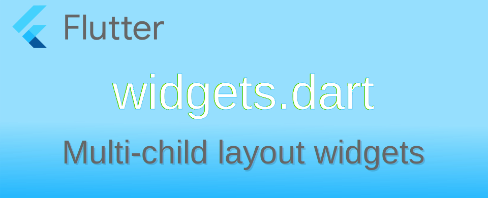

Flutter: วิธีการใช้ Layout GridView เบื้องต้น

GridView เป็น Layout widget ที่จัดเรียง widgets เป็นตารางที่มีขนาดช่องเท่า ๆ กัน หากความยาวของตัว widgets ที่นำมาเรียงทั้งหมดเกิดพื้นที่ของ Parent มันจะสามารถ scroll ตัว widgets ได้อัตโนมัติ ตัว GridView ออกแบบมาให้ใช้งานง่าย โดยมีพื้นฐานมาจาก CustomScrollView และ SliverGrid หากผู้ใช้งานพบว่าตัว GridView มีความสามารถในการจัดวางไม่พอ สามารถเปลี่ยนไปใช้งาน CustomScrollView ได้เลย
ตัวอย่างการใช้งานแบบง่าย ๆ ด้วย GridView.count() แสดงกล่องสีเขียวจำนวน 4 กล่อง แบบ 2x2
import 'dart:math';
import 'package:flutter/material.dart';
void main() {
Color rndGreen() {
return Colors.green.withOpacity(0.1 + (Random().nextDouble() * 0.9));
}
Widget box(String text) {
return Container(color: rndGreen(), child: Center(child: Text(text, textScaler: const TextScaler.linear(3.0))));
}
var body = GridView.count(
crossAxisCount: 2,
children: [box('1'), box('2'), box('3'), box('4')],
);
runApp(MaterialApp(
home: Scaffold(body: body),
));
}
ผลของ GridView.count()
การสร้าง GridView
GridView มี constructor ทั้งหมด 5 แบบด้วยกัน แต่ละแบบออกแบบมาเพื่อการใช้งานที่แตกต่างกัน
-
GridView() สร้าง scroll grid view โดยใช้ SliverGridDelegate
-
GridView.count() สำหรับการแสดง widget ที่มีการกำหนดจำนวนที่จะแสดงในแนวขวาง (cross axis) คงที่
-
GridView.builder() สำหรับงานที่ตัว widget ที่จะแสดงมีปริมาณมาก(หรือไม่รู้จบ ∞) จึงมีตัว builder เพื่อใช้สำหรับแสดงตัว widget ที่ต้องการแสดงเท่านั้น
-
GridView.custom() สำหรับสร้าง scroll grid view ที่ใช้ custom SliverGridDelegate และ custom SliverChildDelegate
-
GridView.extent() สำหรับสร้าง scroll grid view ที่กำหนดขนาดของแต่ละช่องไม่เกินค่าของ
maxCrossAxisExtent
การใช้ SliverGridDelegate ใน GridView()
จากตัวอย่างที่ผ่านมาจะใช้ GridView.count() ในการสร้าง GridView ที่แสดง 2 widget ในแนวขวาง เมื่อต้องการใช้ GridView() ในการสร้าง ต้องระบุตัว SliverGridDelegate ดังนี้
ตัวอย่างที่เปลี่ยนจาก GridView.count() เป็น GridView() และใช้ SliverGridDelegateWithFixedCrossAxisCount ผลที่ได้จะเหมือนกัน
var body = GridView(
gridDelegate: SliverGridDelegateWithFixedCrossAxisCount(crossAxisCount: 2),
children: [square('1'), square('2'), square('3'), square('4')],
);
SliverGridDelegateWithMaxCrossAxisExtent จะใช้สำหรับกำหนดเป็นขนาดสูงสุดที่จะใช้งาน เช่น ขนาดของ widget ที่แสดงใน GridView ต้องไม่เกิน 100px ในตัวอย่างจะเพิ่มกล่องสีเหลือง เพื่อให้เห็นพื้นที่ของ GridView
var body = Container(
color: Colors.yellow,
child: GridView(
gridDelegate: SliverGridDelegateWithMaxCrossAxisExtent(maxCrossAxisExtent: 100),
children: [square('1'), square('2'), square('3'), square('4')],
),
);
วิธีการคำนวณของ SliverGridDelegateWithMaxCrossAxisExtent ก็คือ
- จะคำนวณขอบเขตที่จะส่งให้ widget ให้มีขนาดเสมอกันทั้งหมด
- ขนาดที่ใหญ่ที่สุดของ widget จะไม่เกิดค่า
maxCrossAxisExtent - คำนวณจำนวนช่องที่แบ่ง =
num.ceil(Parent / maxCrossAxisExtent)
ตัวอย่างการคำนวณว่าจะแสดงกี่ช่อง
- Parent มีขนาด 400 จะแบ่งเป็น 4 ช่อง (400 ÷ 100 = 4.00 → 4 ช่อง)
- Parent มีขนาด 401 จะแบ่งเป็น 5 ช่อง (401 ÷ 100 = 4.01 → 5 ช่อง)
- Parent มีขนาด 301 จะแบ่งเป็น 4 ช่อง (301 ÷ 100 = 3.01 → 4 ช่อง)
- Parent มีขนาด 501 จะแบ่งเป็น 6 ช่อง (501 ÷ 100 = 5.01 → 6 ช่อง)
ขนาดของ Parent และค่า maxCrossAxisExtent: 100 จำนวนช่องที่ได้
การกำหนดรูปแบบของ GridView
อัตราส่วนของช่อง ผ่าน childAspectRatio
หากไม่กำหนดค่าอะไร ค่าปริยายจะเป็น 1.0 ผลที่ได้คือสี่เหลี่ยมจัตุรัส หากต้องการเป็นอัตราส่วนอื่นสามารถกำหนดค่าได้ตามการใช้งาน เช่น 16:9 4:3 ก็กำหนดค่าเป็น 16 / 9 4 / 3 เป็นต้น
การกำหนดค่าสามารถกำหนดผ่าน SliverGridDelegate.childAspectRatio หากใช้ GridView.count() ให้กำหนดที่ childAspectRatio
var body = Container(
color: Colors.yellow,
child: GridView(
gridDelegate: SliverGridDelegateWithFixedCrossAxisCount(
crossAxisCount: 2,
childAspectRatio: 4 / 3),
children: [square('1'), square('2'), square('3'), square('4')],
),
);
กำหนดอัตราส่วนของ Grid เป็น 4:3
กำหนดระยะห่างระหว่างแถว ผ่าน mainAxisSpacing
หากต้องการให้แต่ละแถวมีช่องว่างระหว่างกัน (แถวตามแนวแกนของ scrollDirection) ให้กำหนดผ่านค่า mainAxisSpacing
var body = Container(
color: Colors.yellow,
child: GridView(
gridDelegate: SliverGridDelegateWithFixedCrossAxisCount(
crossAxisCount: 2,
mainAxisSpacing: 10),
children: [square('1'), square('2'), square('3'), square('4'), square('5'), square('6')],
),
);
กำหนด mainAxisSpacing: 10 ทิศของ scrollDirection = Axis.vertical
กำหนดระยะห่างระหว่างช่อง ผ่าน crossAxisSpacing
crossAxisSpacing จะเป็นการกำหนดระยะช่องว่างของ widget จะเหมือน mainAxisSpacing แต่คนละทิศกัน
กำหนด padding
กำหนดช่องว่างที่อยู่รอบ ๆ ตัว GridView สามารถกำหนดค่า padding เหมือนที่ทำใน Container
var body = Container(
color: Colors.yellow,
child: GridView(
gridDelegate: SliverGridDelegateWithFixedCrossAxisCount(crossAxisCount: 2),
padding: EdgeInsets.all(10),
children: [square('1'), square('2'), square('3'), square('4'), square('5'), square('6')],
),
);
กำหนด padding: EdgeInsets.all(10) เพื่อเพิ่มพื้นที่ว่างรอบ widgets ทุกด้าน
หากตัว widget ที่จะเอาไปแสดงใน GridView มีจำนวนมาก หรืออาจจะค่อย ๆ โหลดขึ้นมาหากผู้ใช้ต้องการดู สามารถใช้ GridView.builder() เพื่อสร้างตัว widget เพื่อป้อนให้กับตัว GridView
วิธีการใส่ฟังก์ชั่นเพื่อใช้สร้าง widget ให้กำหนดใน itemBuilder โดยเบื้องหลังมันจะไปเรียก SliverChildBuilderDelegate มาใชังาน
var body = Container(
color: Colors.yellow,
child: GridView.builder(
gridDelegate: SliverGridDelegateWithFixedCrossAxisCount(crossAxisCount: 2),
padding: EdgeInsets.all(10.0),
itemBuilder: (context, index) {
return square(index.toString());
},
),
);
ตัวอย่าง เป็นการสร้างกล่องสีเขียวแบบเดิม โดยตัว itemBuilder จะสร้างไปกล่องใหม่ไปไม่รู้จบ ยิ่งผู้ใช้งานปัดเลื่อนลงไปตัวเลขก็จะเยอะขึ้นตามลำดับ การใช้งานแบบนี้ค่าเริ่มต้นจะไม่มี scroll bar ปรากฎให้เห็น
เนื่องจากตัว itemBuilder จะเรียกตัวฟังก์ชั่นทุกครั้งที่มีการ scroll ดู widget ซึ่งมันจะสร้างเผื่อไว้เท่าที่จำเป็นแค่แสดงผลเท่านั้น ในการใช้งานในชีวิตจริง ควรทำการสร้างแบบเก็บ cache เอาไว้เหมือน class factory เพราะเวลาเลื่อนขึ้นกลับมารายการด้านบนซึ่งเป็นรายการที่สร้างไปแล้ว จะได้ไม่ต้องกลับมาสร้างใหม่อีก
Map<int, Widget> factory = <int, Widget>{};
var body = Container(
color: Colors.yellow,
child: GridView.builder(
gridDelegate: SliverGridDelegateWithFixedCrossAxisCount(crossAxisCount: 4),
padding: EdgeInsets.all(10.0),
itemBuilder: (context, index) {
if (factory.containsKey(index)) {
return factory[index];
} else {
return factory[index] = square(index.toString());
}
},
),
);
กำหนดจำนวนสูงสุดด้วย itemCount
หากข้อมูลที่จะแสดงมีจำนวนมาก แต่รู้จำนวน ก็สามารถระบุ itemCount ไว้เพื่อให้ GridView แสดง scroll bar ได้ และหยุดเรียก itemBuilder เมื่อ index มีค่าเท่ากับ itemCount - 1 ตัวอย่าง หากกำหนดค่า itemCount: 300 ตัว index ที่จะส่งให้ itemBuilder คือ 0 ถึง 299
var body = Container(
color: Colors.yellow,
child: GridView.builder(
gridDelegate: SliverGridDelegateWithFixedCrossAxisCount(crossAxisCount: 4),
padding: EdgeInsets.all(10.0),
itemCount: 300,
itemBuilder: (context, index) {
// index range 0 - 299
return square(index.toString());
},
),
);
บอก GridView ว่าข้อมูลหมดแล้ว
ในกรณีที่ข้อมูลที่จะแสดงใน GridView ไม่รู้จำนวนแน่ชัด ไม่รู้ล่วงหน้าเมื่อข้อมูลจะหมดเมื่อไหร่ สามารถส่งค่า null กลับไปเพื่อบอกเมื่อข้อมูลหมดแล้วได้ ตัวอย่าง สมมติว่ามีข้อมูลแค่ 100 เมื่อ index เกิน 99 ให้คืนค่า null
var body = Container(
color: Colors.yellow,
child: GridView.builder(
gridDelegate: SliverGridDelegateWithFixedCrossAxisCount(crossAxisCount: 4),
padding: EdgeInsets.all(10.0),
itemBuilder: (context, index) {
if (index > 99) {
return null;
}
return square(index.toString());
},
),
);
เมื่อ scroll ไปจน itemBuilder คืนค่า null ตัว GridView จะแสดง scroll bar ขึ้นมา แต่หาผู้ใช้งานไปแตะเลื่อน scroll bar จะเกิด error ในการใช้งานแบบเบื้องต้น ก็ใช้วิธีง่าย ๆ คือ ปิด scroll bar ไม่ให้ผู้ใช้งานไปเลื่อน โดยการครอบด้วย ScrollConfiguration แล้วกำหนด behavior ให้ปิด scrollbars หากเขียนใน widget ทีสร้างเป็น class ที่เป็น Stateless หรือ Stateful ก็ให้ใช้คำสั่ง ScrollConfiguration.of(context).copyWith(scrollbars: false) ผ่านการดึงข้อมูล BuildContext แทน
var body = Container(
color: Colors.yellow,
child: ScrollConfiguration(
behavior: MaterialScrollBehavior().copyWith(scrollbars: false),
child: GridView.builder(
primary: false,
gridDelegate: SliverGridDelegateWithFixedCrossAxisCount(crossAxisCount: 4),
padding: EdgeInsets.all(10.0),
itemBuilder: (context, index) {
if (index > 99) {
return null;
}
return square(index.toString());
},
),
),
);
เมื่อไหร่ไม่ควรใช้ GridView
เนื่องจาก GridView ออกแบบมาเพื่อให้เรียง widget เป็นตารางในขนาดที่เท่า ๆ กัน และ สามารถ scroll ได้ ดังนั้นหากงานไหนที่ไม่ต้องการให้มีการ scroll และต้องการให้แสดง widget ทั้งหมดในครั้งเดียว ก็ไม่ควรใช้ GridView อาจใช้ widget อย่างอื่นแทนเช่น Table หรือ Wrap แทนเป็นต้น